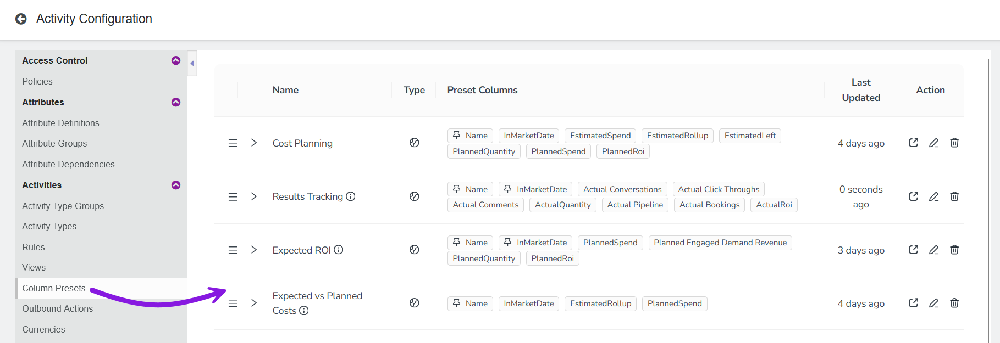
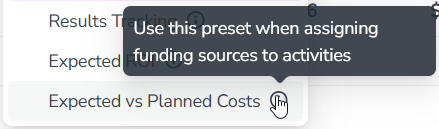

Manage Summary column presets for your organization
Administrators have access to additional tools for managing Organization Presets, the Column Presets that are available to all users in your Uptempo instance.
Manage Organization Presets in your Uptempo instance
As an administrator, you can see a list of all Organization Presets that you and other administrators have created in your Uptempo instance. Using this list, you can review metadata about each preset, and details about the specific column configuration saved to the preset.
In the Activities section, click Settings:
In the Activity Configuration menu, click Activities > Column Presets. A list of all existing Organization Presets is shown: 
The list displays each preset's name (and description, if present), associated display settings, and when it was last updated. On any preset, click Expand to preset more details, such as who created the preset and when.
Using the list of all Organization Presets in your Uptempo instance, you can edit the name or description of any existing column preset, as well as change the order in which the presets are displayed in the Select Column Preset menu.
Change the name or description of an Organization Preset
From the list of Organization Presets, you can quickly rename any existing preset. You can also add (or change) any preset's description text. Description text is displayed as a tooltip beside the preset's name in the Select Column Preset menu, and is useful for explaining the intended purpose of a preset:

In the list of Organization Presets, find the preset whose name or description you want to change.
On the row of the preset you want to edit, click Edit Preset Name in the Action column. The Edit Preset dialog opens.
Use the Name and Description fields to enter a new name or description text (or both).
To apply your changes, click OK.
You have changed the name or description of the preset. Your changes will be reflected in the Select Column Preset menu with immediate effect.
Change the display order of Organization Presets
By default, presets are displayed in the Select Column Preset menu in alphabetical order. For Organization Presets, you can modify the display order to list these presets in any custom order of your choice.
The list of Organization Presets shows the presets in the order in which they are displayed in the Select Column Preset menu. In the list, find a preset whose display position you want to change.
In the Name column, use the Menu Order handle to drag the preset to the position where you want it to appear.
Repeat steps 1 and 2 until the presets are in the order you want. Your changes are saved automatically.
You have changed the display order of your Organization Presets. Your changes will be reflected in the Select Column Preset menu with immediate effect.
 Settings:
Settings: 
 Expand to preset more details, such as who created the preset and when.
Expand to preset more details, such as who created the preset and when. Menu Order handle to drag the preset to the position where you want it to appear.
Menu Order handle to drag the preset to the position where you want it to appear.